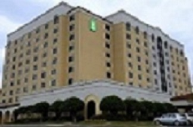

I was born in Rohnert Park, which is a city in Sonoma County, California. It is 50 miles north San Francisco. My family and I would always go on nature walks. I went to kindergraden at Monte Vista Elementry School. I was 4 turning 5 when I started Kindergarden. After school sometimes, I would go to all these parks names with letters of the alpahbet. After my Kindergarden year was over, I found out we were moving to South Carolina. I was excited but sad because I was leaving all of my friends. We took many trips to South Carolina, and when came we stayed at an Embassy Suite in Mauldin South Carolina. We would come back and forth until we would find a suitable apartment to live in. We then stayed at Walden Creek Apartments all through when I got to third grade. I also started soccer at Cesa (Carolina Elite Soccer Academy). When we moved to South Carolina, I returned to school, and went to Oakview Elementry School. We built a house that was done by the summer before I went in to 4th grade. We moved in to our new house and picked out our rooms. We unpacked most of our stuff but still had a lot to do. This was on of my many adventures. After I finished elementry school, I went to Riverside Middle School from 6th grade to 8th. I had fun through out my younger years.
